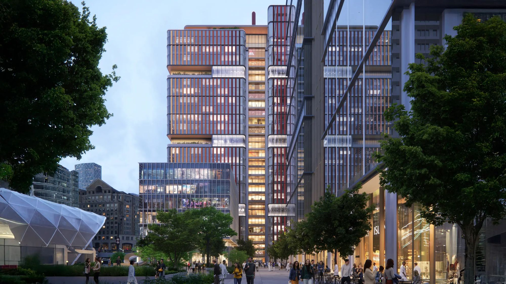
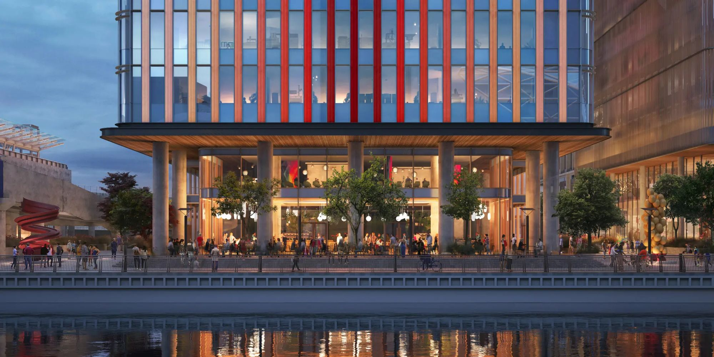
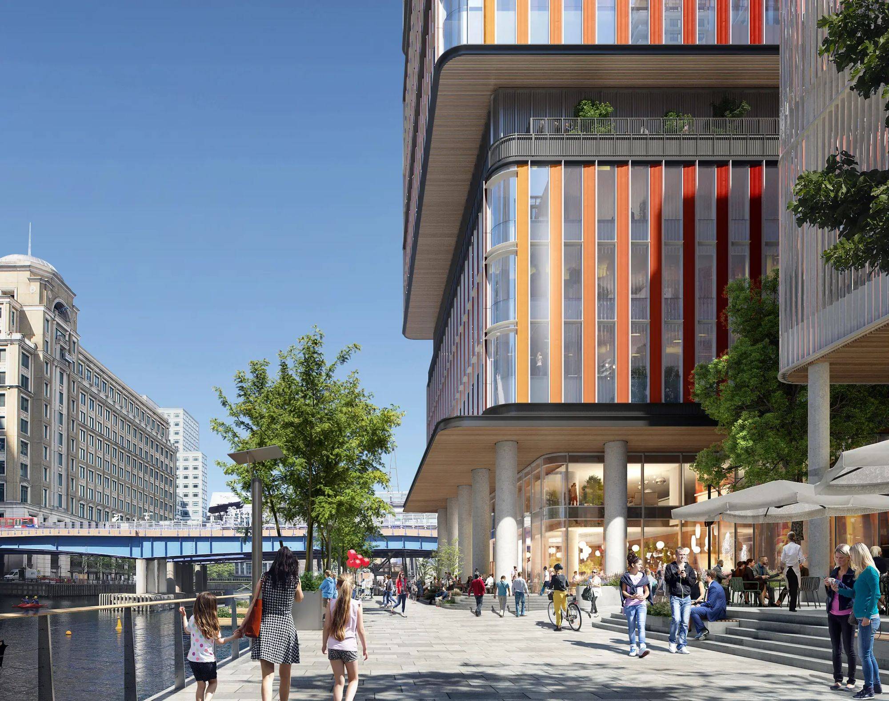
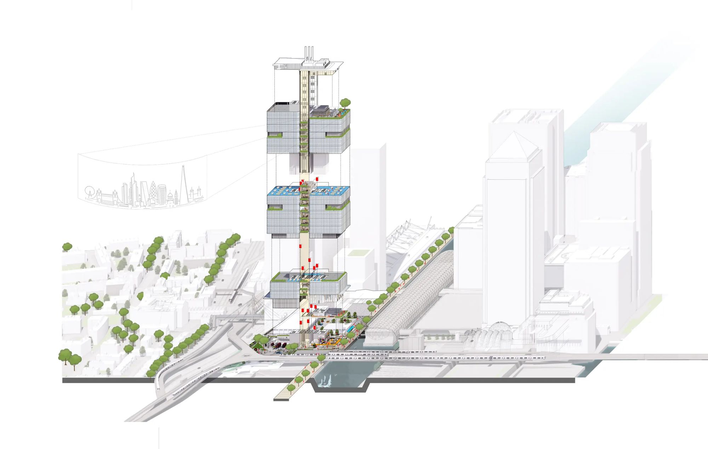
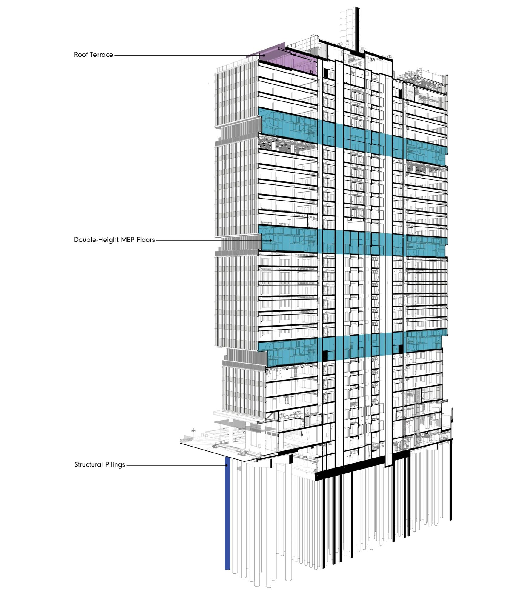
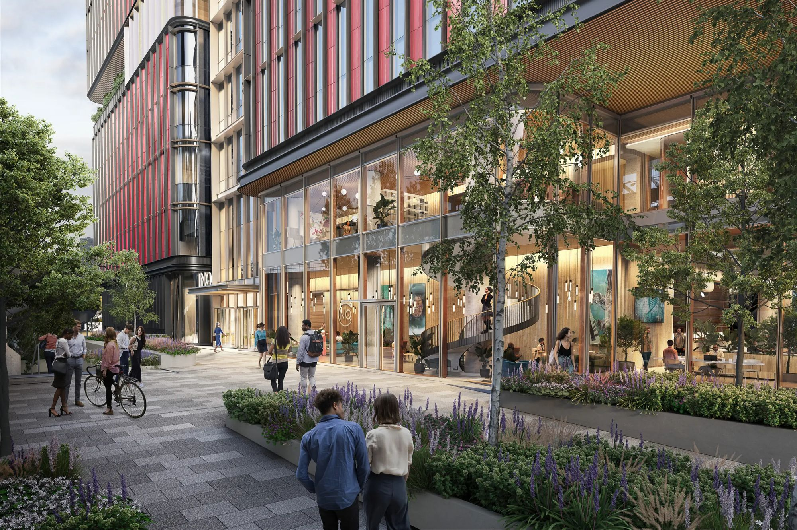
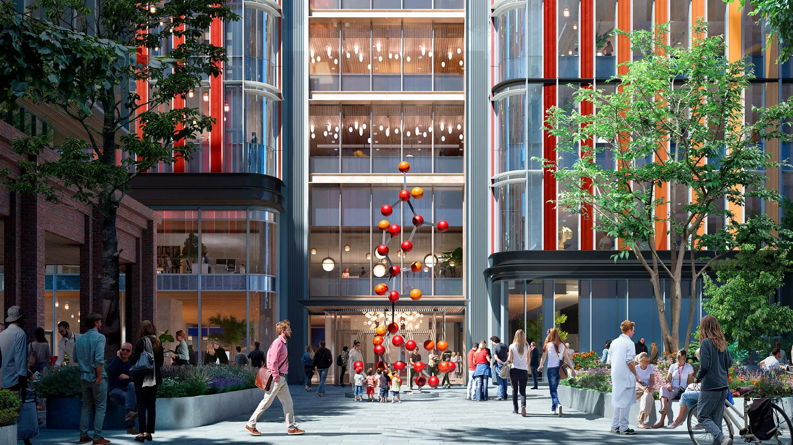
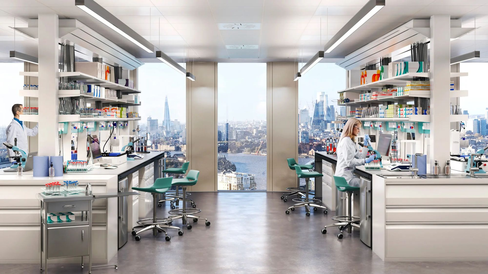
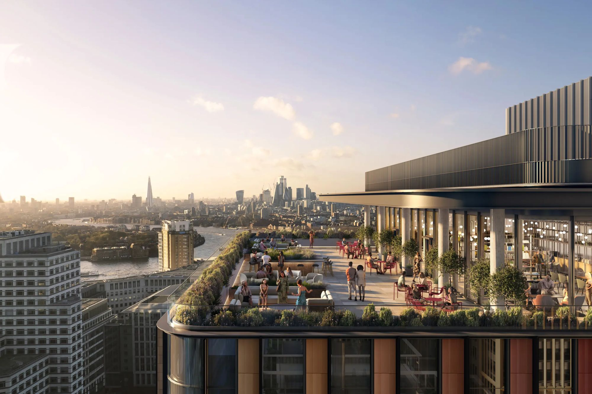

Facade and BIM lead. Europe's tallest purpose-built lab building, now rising at Canary Wharf in London.
I led the terracotta facade package, about 120 sheets, through RIBA Stage 4 and into construction, working with facade engineers, manufacturers and cost consultants. I also designed the public realm and landscape, and worked with glazing artists on the facade's color gradient.
As BIM lead for a team of ten, I ran coordination across 10–15 consultant models and built the facade's curved and faceted panel families.
- Client
- Canary Wharf Group and Kadans Science Partner
- Recognition
- MIPIM Awards 2024 and Digital Construction Awards 2026, finalist









Double-height plant floors divide the tower into stacked blocks of labs.







